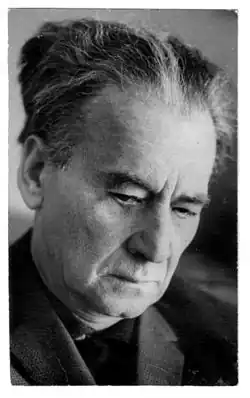
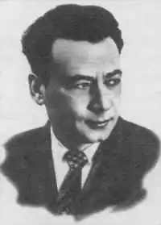
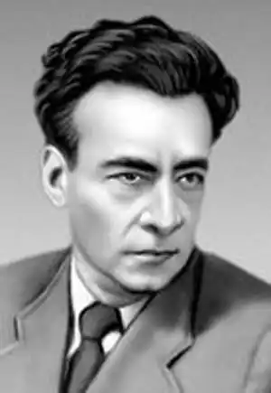

ПЕРВОМАЙСЬКИЙ Леонід Соломонович
у пешому ряду другий зліва
(1908 — 1973)"Все своє життя він чесно завойовував право засвітіггись в сузір'ї Поезії — в сузір'ї Ліри. І час підтверджує це ного високе право". (Б. Олійник "В сузір'ї Ліри"). Леонід Соломонович Первомайський (Ілля Шльомович Гуревич) народився 17 травня 1908 року в родині ремісника-палітурника в місті Костянтинограді (тепер Красноград) на Полтавщині, Тут і пройшли його дитинство і юність. Грамоти Ілля навчився дуже рано з розрізних абеток для шкіл, які виготовлялися в батьковій майстерні. Учився скрізь потроху: в початковій школі, в міській чоловічій гімназії і в трудовій семирічці. Багато й жадібно читав — ця пристрасть залишилась у нього на все життя, і саме завдяки читанню він, формально більш ні в яких школах не навчаючись, самотужки здобув грунтівну освіту. (Обізнаність Первомайського з світовою літературою і фольклором часом дивувала навіть спеціалістів). Працювати майбутній поет почав з шістнадцяти років: спочатку на цукроварні, потім у Зачепилівці завідував бібліотекою і хатою-читальнею. У 1925 році він переїхав на життя до міста Лубни. Робота в газеті "Червона Лубенщина" прилучила його майже до всіх жанрів газетної прози й поезії. Вже в 1926 році молодий поет переїздить до Харкова і працює тут в редакції дитячого журналу "Червоні квіти", стає членом літературного об'єднання "Молодняк". З 1926 по 1928 рік вийшло десять окремих видань його оповідань та повістей. Перша книжка віршів "Терпкі яблука" вийшла у 1929 році. Леонід Соломонович з любов'ю пише про рідне місто: Я хочу бути терпким, як яблуко, зелене яблуко з твоїх садів, Червоноградщино, де я блукав, Це при дорогах я сидів. Тече річка, два миє береги, Два має береги— одним садам... Краси твоєї ні за Америки, Ні за Австралії я не віддам. У літературу Леонід Первомайський увійшов стрімко. Така ж була і його натура — енергійна, запальна, чуйна до покликів часу. Письменник Л. М. Новиченко бачить в творчому розвитку поета три періоди: "Перший — це строго кажучи, період намацування власного творчого шляху, період шукань — уже не зовсім учня, але ще й не майстра. Не учня — тому, що і в своїх ранніх поезіях Первомайський виявляв неабияку віршову вмілість і досить широкий літературний кругозір. Не майстра — тому, що варто порівняти перші його збірки — ті ж "Терпкі яблука", "З фронту", "Героїчні балади", "Моя весела молодість" і навіть дуже хваленій того часу "Пролог до гори" (1933) з "Новою лірикою" (1937) і особливо, де поет виступає справжнім майстром, а де — підмайстром, чи, може, півмайстром. Другий період умовно можна вкласти в рамки двох десятиріч — від другої половини 30-х років до кінця 50-х. Він охоплює і передвоєнні роки, коли поет дійшов "свого зросту і сили" і славну сторінку в творчій біографії Первомайського, — його вірші часів Великої Вітчизняної війни, і повоєнне десятиріччя, коли його творчість знала і піднесення, й певні спади. І є підстави окремо виділити час від початку 60-х років до кінця життя поетового (помер 1973 р.), коли були створені роман "Дикий мед" і книги віршів "Спомин про блискавку", "Уроки поезії", "Древо пізнання", "Вчора і завтра" (опубліковано посмертно в 1974 році) — час досягнутого творчого синтезу, час нового плідного заглиблення поета в життя і — через власну душу — в душі своїх сучасників". В роки Великої Вітчизняної війни Первомайський працював військовим кореспондентом газети "Правда". За збірки віршів "День народження" і "Земля" поет удостоєний Державної премії СРСР. Героїку війни поет відтворив у філософському романі "Дикий мед". Цей роман екранізований. Леонід Соломонович виступав як літературний критик, теоретик поезії і перекладач. Він переклав на українську мову твори Лєрмонтова, Маяковського, Гейне, Війона, Петефі, Фучика, Нізамі, балади слов'янських та інших народів світу. За участь у Великій Вітчизняній війні поет нагороджений орденами Червоного Прапора, Вітчизняної війни першого ступеня і медалями. Дочка Первомайського Сусанна Пархомовська передала Красноградському краєзнавчому музею ордени і робочий кабінет батька. У Краснограді на будинку, в якому народився поет, встановлена меморіальна дошка. 17 травня 1978 року красноградці урочисто відзначили 70-річчя від дня народження видатного земляка. В урочистих зборах взяли участь письменники з Харкова, Києва і Москви. У Москві ювілей Леоніда Соломоновича Первомаиського відзначався 23 травня 1978 року. На урочисті збори прибули літератори з усіх республік СРСР. Така честь була надана і директору Красноградського краєзнавчого музею. Виступаючі на урочистих зборах називали Л. С. Первомаиського класиком української літератури. Твори поета звучали на всіх мовах народів СРСР. Добрим словом згадували Леоніда Соломоновича І. С. Козловський, кіноактор і режисер Олексій Баталов, Савва Голованівський і багато інших. Степан Олійник розповів, що солдати у роки війни чин поета Первомаиського ставили вище генерала: "Мне чин й повыше встречался... позт майор Леонид Первомайский!" — говорить солдатам бравий старшина. Леонід Первомайський був надзвичайно вимогливим до кожного слова своїх творів: "Кожен раз, коли я сідаю до столу, мені здається, що я ще нічого не написав, що все треба починати заново, а чистий лист паперу здається мені великим полем, яке треба виорати і засіяти...". Ім'я Леоніда Соломоновича Первомаиського занесено в енциклопедію світової літератури.